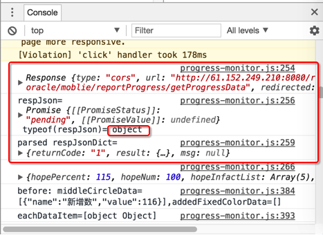

HTTP库
此处整理不同编程语言的HTTP方面的库：
iOS的swift／Obj-C
Python
- 内置
- Python 3
- Python 2
- 第三方
- 详见独立教程
JavaScript
- 好用的
- 其他的
- Request
- Web API的Fetch
- SuperAgent
- fetch
- https://github.com/github/fetch
- 举例
import ‘whatwg-fetch’; fetch( ‘http://xxxxx/getProgressData’, { method : ‘POST’, headers : { ‘Content-Type’: ‘application/x-www-form-urlencoded; charset=UTF-8’, ‘Accept’: ‘application/json’ }, body: ‘currTime=2017-08-25&orgCode=SK316005’ } ) .then((resp) => { console.log(resp); let respJson = resp.json(); //typeof(respJson)= object console.log(‘respJson=’, respJson, ‘typeof(respJson)=’, typeof(respJson)); return respJson; }) .then((respJsonDict) => { console.log(‘parsed respJsonDict=’, respJsonDict); }); - 效果
- 返回的是object对象，是Response类型，其中json()之后得到的是Promise对象，也就是可以直接拿来使用的json对象了，然后就可以进行后序数据处理了
- 
- 返回的是object对象，是Response类型，其中json()之后得到的是Promise对象，也就是可以直接拿来使用的json对象了，然后就可以进行后序数据处理了
- 举例
- https://github.com/github/fetch
C#
- HttpWebRequest
- crifan的lib的C#的http的部分